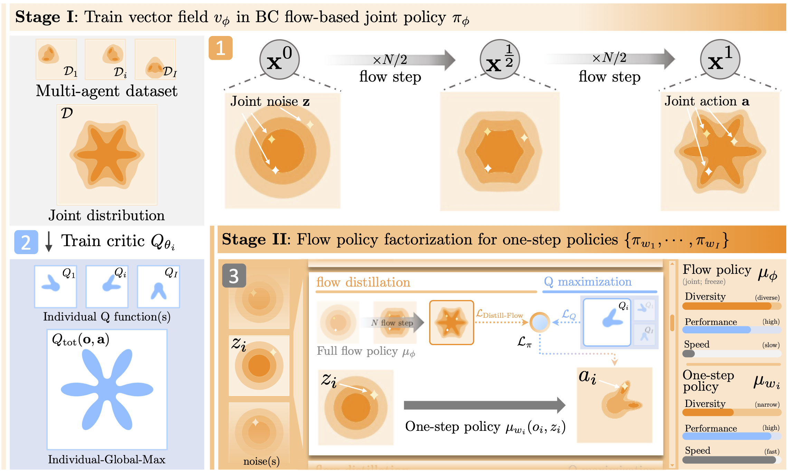
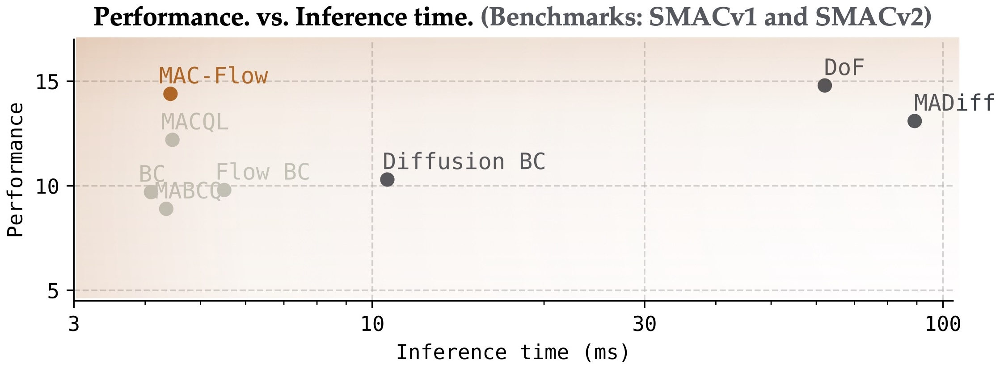

Fast and Expressive Multi-Agent Coordination
Multi-agent coordination is not single-agent RL with more agents. The real difficulty is structural: when multiple agents share an environment, the joint action space grows exponentially, and the same observation can produce wildly different coordinated outcomes depending on subtle cues that no individual agent has full access to. The space of 'what agents could do together' isn't a simple product of individual possibilities. It's a combinatorial landscape of roles, formations, and strategies, all entangled through shared dynamics.
This combinatorial structure is what makes offline MARL especially challenging. In the offline setting, you can't explore. You're stuck with whatever data you have, and that data reflects the full messiness of real coordination: multiple behavioral policies, diverse quality levels, multi-modal joint action distributions. A method that can't represent that diversity will simply fail to learn meaningful teamwork.
Yet when it's time to deploy these policies, the requirements flip entirely. Real systems need to act within a few milliseconds. You cannot run a 200-step denoising chain to decide which direction to move at every decision point. The training phase demands expressiveness; the deployment phase demands speed.
Two camps, same impasse
On one side, we have Gaussian policy-based methods (simple offline MARL), e.g., OMIGA, ICQ, FACMAC, and extensions of offline RL like TD3+BC, CQL, and BCQ into multi-agent settings. These are fast. Inference is a single forward pass: a few milliseconds, done. But the speed comes at a structural cost. Gaussian policies model the action distribution as a unimodal curve. In multi-agent tasks, these methods collapse them into an averaged behavior. The agents move fast, but they should not coordinate.
On the other side, we have diffusion-based methods, e.g., MADiff and DoF. These are genuinely powerful. By modeling the joint action distribution through iterative denoising, they can capture the complex multi-modal structure of coordinated behavior. But so is the cost. MADiff in its decentralized variant requires \(O(I^2 K)\) computation per environment step, where \(I\) is the number of agents and \(K\) is the number of denoising steps. DoF improves this to \(O(IK)\) through factorization, but still needs the full iterative chain.
The empirical picture is stark. Across the 18 dataset-scenario pairs in SMACv1 and SMACv2, Gaussian baselines like BC and MABCQ average 12.2 and 5.5 in reward, respectively. Diffusion methods like DoF reach 15.6. But DoF takes roughly 14.5× longer per inference step than methods in the Gaussian policy.
Decouple representation from execution
Prior methods force the same model to do two fundamentally different jobs: (1) represent the rich, multi-modal joint action distribution present in offline data, and (2) produce fast, decentralized actions at deployment. These are different objectives with different computational profiles. Merging them into a single learning target is what creates the trade-off.
The engineering principle is simple. Don't make the same object serve both purposes! Instead, learn the joint behavior in its full expressive glory during training. Specifically, take as many flow steps as you need, condition on global observations, and model the entire joint action space. Then, distill that knowledge into decentralized one-step policies for deployment.
This isn't just an architectural trick. It reflects something deeper about the structure of coordination problems. Coordination is fundamentally about the group. On the other hand, each agent needs to produce an action quickly. The joint space is where you learn. The individual space is where you act. Decoupling them is the move.
How MAC-Flow works
MAC-Flow implements this principle in two stages.

MAC-Flow first extract joint behaviors, which are multi-modal and complex, from offline data via flow-matching, and then distill them into fast individual policies using BC distillation.Stage I: Capture the joint behavior via flow matching
First, we learn a flow-based joint policy \(\mu_\phi(\mathbf{o}, \mathbf{z})\) that captures the joint action distribution from the offline dataset. Flow matching provides the backbone here. Unlike diffusion models, which rely on stochastic differential equations and require many iterative denoising steps, flow matching learns a deterministic ODE-based transport from noise to actions via a simple velocity field as follows.
The training is straightforward, but the result is expressive. The learned flow captures the multi-modal structure of coordinated behaviors in the offline dataset. This is where the expressiveness lives, and we don't compromise it.
Stage II: Distill into one-step decentralized policies
The joint flow policy is powerful but impractical for deployment, that is, it conditions on global information and requires multiple Euler integration steps. So we factorize it. For each agent \(i\), we learn a one-step sampling policy \(\mu_{w_i}(o_i, z_i)\) by jointly optimizing two objectives as follows.
The first term maximizes the global Q-function under the individual-global-max (IGM) principle, ensuring that per-agent actions stay aligned with optimal joint behavior. The second term is BC distillation. It keeps each agent's one-step policy close to what the full flow policy would have produced for that agent. We can call it a projected policy. The balance coefficient \(\alpha\) mediates between value maximization and distributional fidelity.
Here is the result. At deployment, each agent runs a single forward pass through a lightweight MLP. Per-agent inference complexity is \(O(1)\), independent of both the number of agents and the number of flow steps used during training. Total complexity scales linearly as \(O(I)\).
What the numbers say
We evaluated MAC-Flow across four widely-used MARL benchmarks, including continuous and discrete action control, covering 12 environments and 34 datasets. Here is our heading result.

A snapshot of the classic trade-off: faster methods tend to be less expressive, while more expressive models come with higher inference costMAC-Flow achieves approximately \(14.5\times \) faster inference than diffusion-based methods while maintaining comparable performance. On SMACv1, MAC-Flow matches the best diffusion baseline in average reward, while running at a fraction of the computational cost. On MA-MuJoCo, MAC-Flow achieves the highest average reward across all baselines.
Additinoally, MAC-Flow matches the inference complexity of Gaussian methods while dramatically outperforming them in coordination quality. And it matches or exceeds the performance of diffusion methods while being an order of magnitude faster.
| Method | Type | Complexity per agent | Total Complexity |
|---|---|---|---|
| MAC-Flow | Flow (one-step) | O(1) | O(I) |
| DoF | Diffusion | O(K) | O(IK) |
| MADiff-D | Diffusion | O(IK) | O(I²K) |
| Gaussian baselines | Gaussian | O(1) | O(I) |
Where it breaks, and what comes next
I want to be honest about the boundaries. The IGM principle is what makes factorization work. In specific, the assumption that the global optimum can be decomposed into per-agent optima. But there exist coordination structures where this assumption is provably violated.
We tested this explicitly with an XOR coordination task: two agents whose optimal joint actions are anti-aligned \((−1, +1)\) and \((+1, −1)\). In this setting, no per-agent Q-function can recover the optimal strategy. The flow-based joint policy captures the structure perfectly, especially in reconstructing both modes. But when we distill into projected policies, the representation collapses into a near-uniform product distribution. The failure isn't due to training instability or insufficient capacity; it's because the coordination structure is fundamentally non-separable under IGM.
This is an important boundary condition. It tells us that the current approach works well when coordination admits some degree of decomposability, but breaks down when inter-agent coupling is maximally entangled. Understanding exactly when and why factorization degrades is an open problem that still needs more analysis.
Looking ahead, I see several directions that excite me and throw open questions:
- Is BRAC-style extraction really the best policy extraction for MARL? MAC-Flow follows simple structure of TD3+BC. Although this is simple and powerful, but we don't know is it optimal solution for MARL. We need more worth exploring, including AWR, rejection sampling, Best-of- N sampling, and variational formulations
- The recent surge of test-time RL and test-time adaptation in LLMs raises a natural question: Can agents improve their coordination at test time? How do we leverage variational gradient descent on the flow prior and test-time RL via unsupervised manner (e.g., behavioral foundation model) for multi-agent setting?
- How much does the mixer network matter? The progression from VDN's linear sum to QMIX's monotonic network, to QPLEX's duplex dueling decomposition and Qatten's attention-based mixing, has demonstrated that mixer architectures unlock more expressive credit assignment.
Closing thoughts
When you force the same model to both represent complex joint behavior and act quickly as individual agents, you're asking it to solve two conflicting goals simultaneously. No wonder it struggles.
The fix is an engineering principle. Learn the structure where it's easiest to learn it, and execute where it's fastest to execute. In our case, the joint space is where the coordination structure lives, and the individual space is where fast inference happens.
If you're designing multi-agent systems that need to scale into real-world settings, I think this separation of representation and execution is one of the cleanest ideas we have.
This blog posting is from Multi-agent Coordination via Flow Matching, supervised by Amy Zhang.